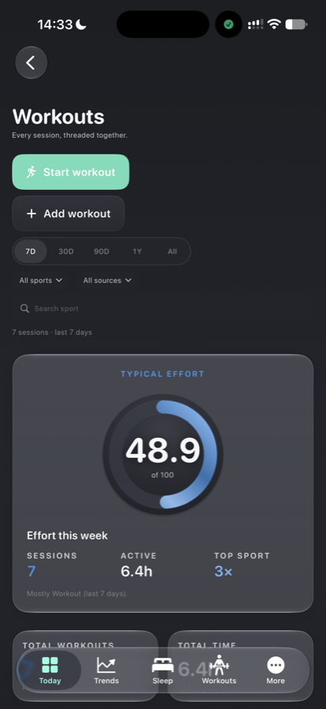
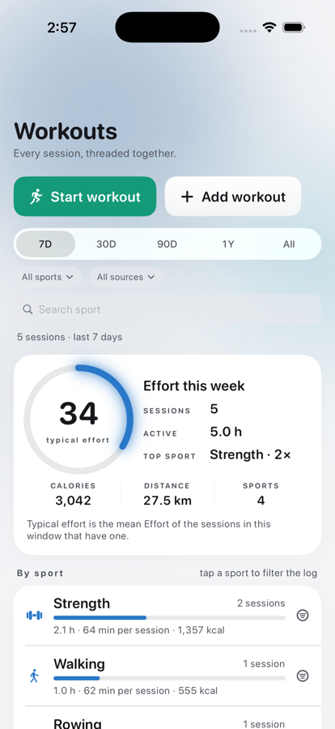
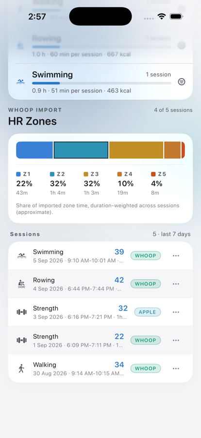
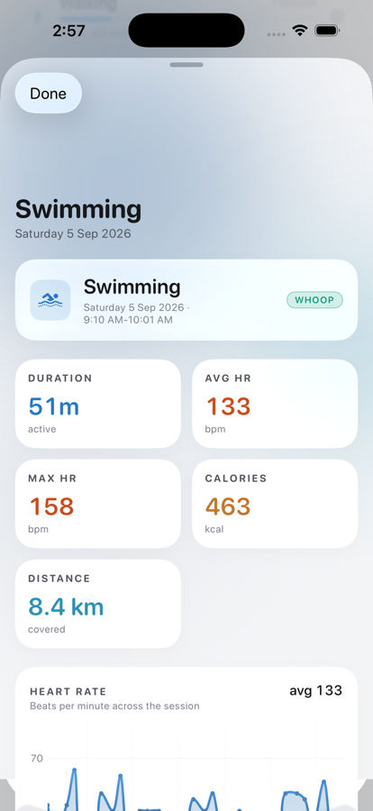
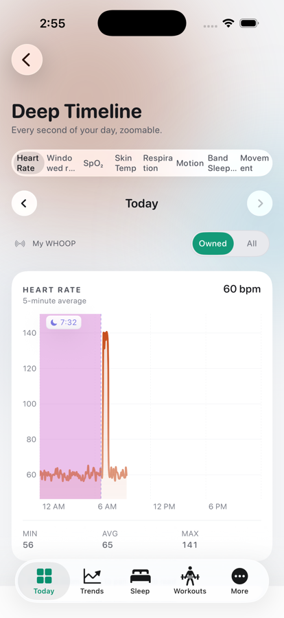
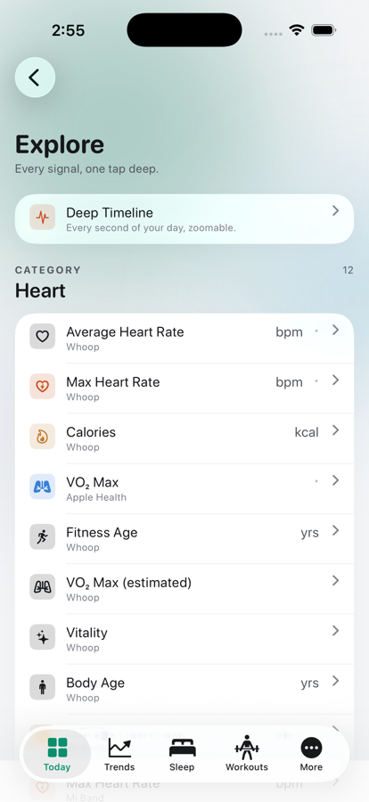
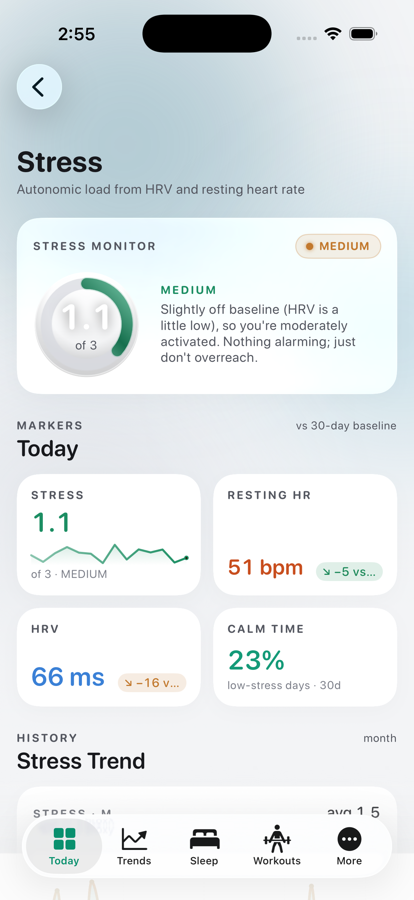
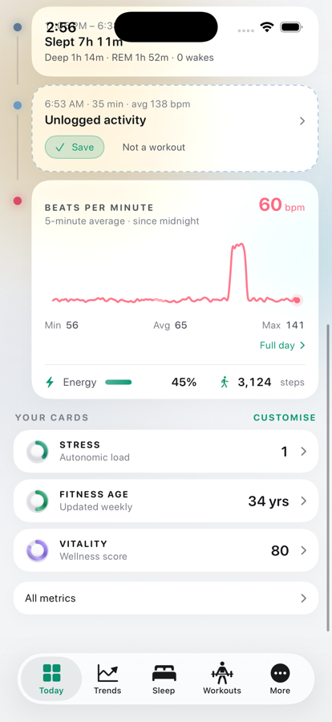

Everything the Halo home page opens: the Workouts log (from the timeline's workout card), a workout's detail, the Deep Timeline (from "Full day"), Explore (from "All metrics"), Stress and the metric pages (from Your cards), Data Sources (from the provider pill). Same idiom as the tabs and their drill-downs: colour field, glass, the one ring, the one range control, the one stepper, a tick on every door.
Before: the classic list with its own 7D/30D pill, a vessel gauge, five stat tiles, sport cards and a table. After: one summary slab with typical effort as the large ring and one number per stat, the sport breakdown as rows that filter the log when tapped, HR zones as glass, sessions as one stack, the shared range control on top.



Colour field and glass under Halo; the timeline's eight-metric picker is the range control in its scrolling form, and its day arrows are the stepper. The Stress monitor's own gauge is next on the list for the one ring.




